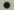

Novik&CoКоординация проекта, скриптование, сборка: Александр «Novik» Москалец Cюжет, диалоги: Иван Кошкин 3D-моделирование, анимация, 2D-графика, текстуры, общий дизайн: Валерий «DieZeL» Рельсов Создание игровых зон: Игорь «Ingvar» Шабальников Скриптование, тестирование: Дмитрий «DEMON.GDV» Громов Тестирование, создание игровых зон: Виталий «WildR@ID» Марков Novik&Co благодарит за помощь в создании игры Интернет-сообщество<Военно-исторический форум-2> (www.vif2ne.ru) Nival InteractiveПродюсер: Сергей Орловский Исполнительный продюсер: Дмитрий Захаров Продюсер русской версии: Илья Мамонтов Выпускающий менеджер русской версии: Андрей Белов Разработка логотипа игры: Виктор Сурков Композитор: Андрей «Archont» Федоренко Мастеринг звука: Лариса Цыпленкова Роли озвучивали: Дмитрий Полонский (Главный герой) Людмила Ильина Елена Миллиоти Алексей Кузнецов Сергей Сазонтьев Андрей Финягин Геннадий Фролов Сергей Чекан Виктор Зозулин Виктор Петров Юрий Шерстнев Александр Быков Олег Семисынов Вячеслав Шолохов Иван Литвинов Всеволод Кузнецов Михаил Розенберг Ольга Васильева Сергей Кутасов Корректор: Светлана Подберезина Руководство пользователя: Ярослав Чеботарев Web-дизайн, дизайн и верстка руководства и упаковки: Ираида Башинская Артем Ивлев Дизайн рекламных материалов: Евгений Жуков Менеджеры игрового сообщества: Дмитрий Колпаков Лариса Бакланова Тестеры: Виталий Орлов Ярослав Чеботарев Тестеры бета-версии: Дмитрий Никуленков Алексей Леваков Даниил Ермолаев Алексей Дорофеев Александр Булыгин Александр Егоров Кирилл Гончаров Администратино-финансовый отдел: Ольга Федешова Елена Рубанова Валерия Чеботарева Марина Митькина Сергей Синицын Отдельное спасибо: Леонид Черный Максим Серков Андрей Плахов Антон Кругляков Геворг Эмин Михаил Розенберг Габриэль Духовская Михаил Матвеев Денис Борзенков Евгений Метляев Станислав Каменев Студия «ЛЕСТА»Директор: Малик Хатажаев Продюсер: Сергей Красов Монтажер: Полина Тихонова Художник-аниматор: Денис Давыдов Звукорежиссер: Даниил Ворошилов ЗАО "1С"Продюсер: Юрий Мирошников Исполнительный продюсер: Александр Гурин Маркетинг и PR: Николай Барышников Анатолий Субботин Светлана Горобец Алексей Артеменко «Серп и Молот» © 2005 Nival Interactive. Все права защищены. Этот продукт использует программные технологии, лицензированные у FMOD sound and music system, copyright © Firelight Technologies, Pty, Ltd. 1994-2002. Используется технология воспроизведения видео Bink. В игре использована технология LIFESTUDIO:HEAD ® Используется библиотека видео спецэффектов Artbeats Digital Film Library. Используется библиотека звуковых спецэффектов Sound Ideas Copyright © 1992 Digital SFX Library Series 6000 - The General All Rights Reserved. Создатели игры «Серп и Молот» выражают благодарность разработчикам свободно распространяемого программного обеспечения и технологий, использованных в игре. Язык сценариев Lua разработан и создан Waldemar Celes, Roberto Ierusalimschy и Luiz Henrique de Figueiredo. Lua Copyright © Ogg Vorbis Copyright © 2002, Xiph.org Foundation. Libpng Copyright © 2000-2002 Glenn Randers-Pehrson. Zlib Copyright © 1995-2002 Jean-loup Gailly и Mark Adler. Scintilla Copyright © 1998-2002 by Neil Hodgson (neilh@scintilla.org). STLport Copyright © 1999,2000 Boris Fomitchev. MSDE 2000 Copyright © 2000 Microsoft Corporation. |